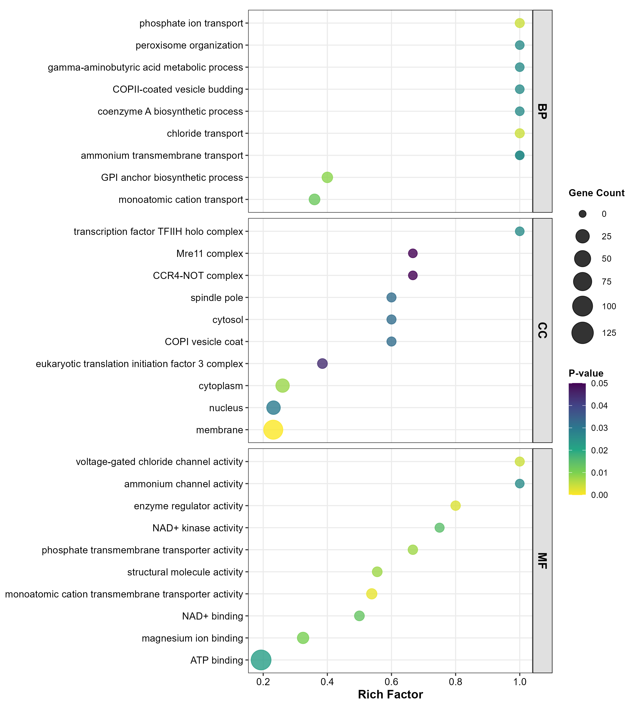

1. 站内超链接
2. 代码框
print('代码框')
3. 表格
3.1 无底注表格
| A | B | C | |
|---|---|---|---|
| 1 | A1 | B1 | C1 |
| 2 | A2 | B2 | C2 |
3.2 有底注表格
| A | B | C | |
|---|---|---|---|
| 1 | A1 | B1 | C1 |
| 2 | A2 | B2 | C2 |
4. 注意框
注意框
5. 代码符
代码符
6. 下载卡片
7. 图片插入
7.1 无图片底注

7.2 有图片底注
8. 公式支持
$$\delta_1(j) = {P(x_1 j)} \times {P(y_1 k | x_1 j)}(i=1)$$